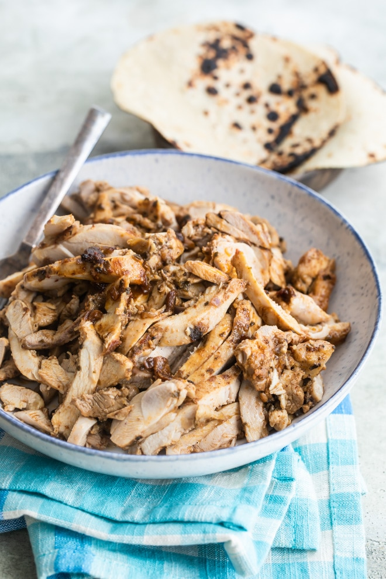

Chipotle Chicken

Description
Basically if you wanna have Chipotle, but at home
Great for mealprep purposes, if you want a bunch of Chipotle
Ingredients
- 1/2 medium red onion coarsely chopped
- 3 cloves garlic
- 2 tablespoons adobo sauce
- 2 tablespoons ancho chile powder or 1 ounce dried ancho chiles, soaked
- 2 tablespoons olive oil or rice bran oil, plus more for the cooking surface
- 2 teaspoons ground cumin
- 2 teaspoons dried oregano
- Salt and freshly ground black pepper
- 4 pounds boneless, skinless chicken
Steps
- Add all ingredients (minus chicken) into a food processor and process until smooth
- Add chicken to a gallon bag
- Add marinade to bag and squeeze until evenly coated inside bag. Let sit for one hour.
- Bake at 400 degrees on pan over wire rack for 30-40 minutes
- Remove from oven and let cool for 10 minutes. Cut chicken into small pieces.